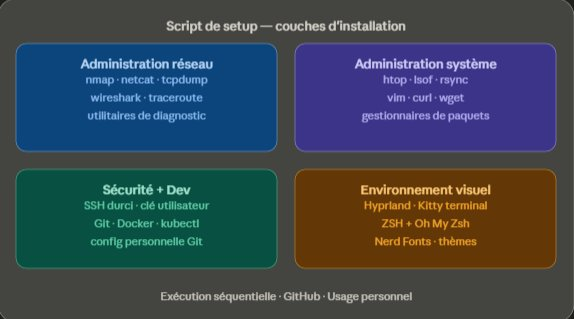

Réalisations
Cliquez sur une réalisation pour en savoir plus.
 Réalisation · 01
Réalisation · 01
Infrastructure sécurisée
Refonte complète d'une infrastructure TPE, réseau, virtualisation, services, SOC, en alternance.
 Réalisation · 02
Réalisation · 02
Sonde IDS conteneurisée
Solution open source de déploiement automatisé de sondes IDS (Suricata, Zeek, Arkime) via Docker.
 Réalisation · 03
Réalisation · 03
Audit de sécurité
Audits internes, pentests, CTF et bug bounty, identification et priorisation des vulnérabilités.

Réalisation · 04Script de setup personnel
Script d'installation automatisée, d'un Linux vierge à un poste opérationnel en moins d'une heure.
 Réalisation · 05
Réalisation · 05
Outil de déploiement automatisé
Outil de déploiement de configurations sur endpoints distants via SSH, précurseur personnel d'Ansible.